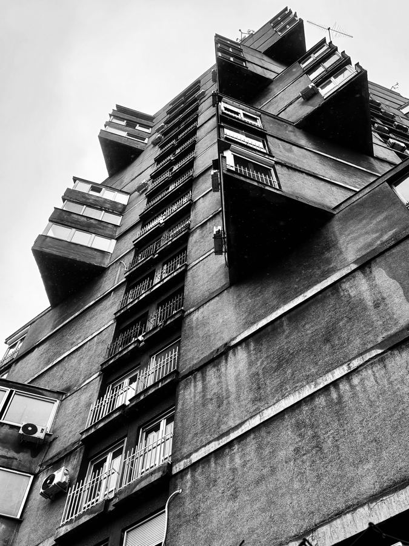
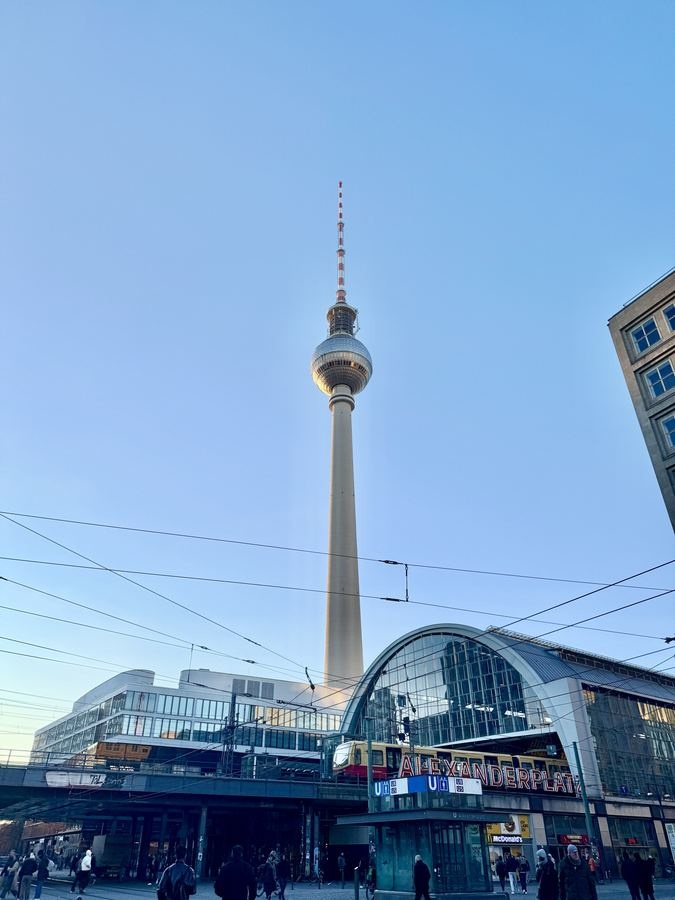
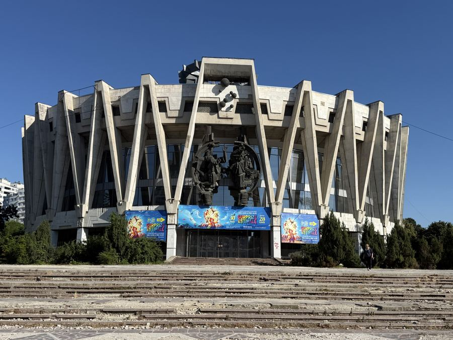
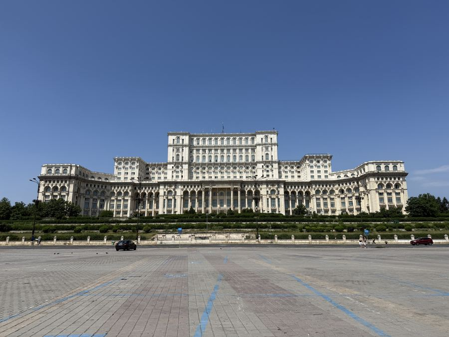
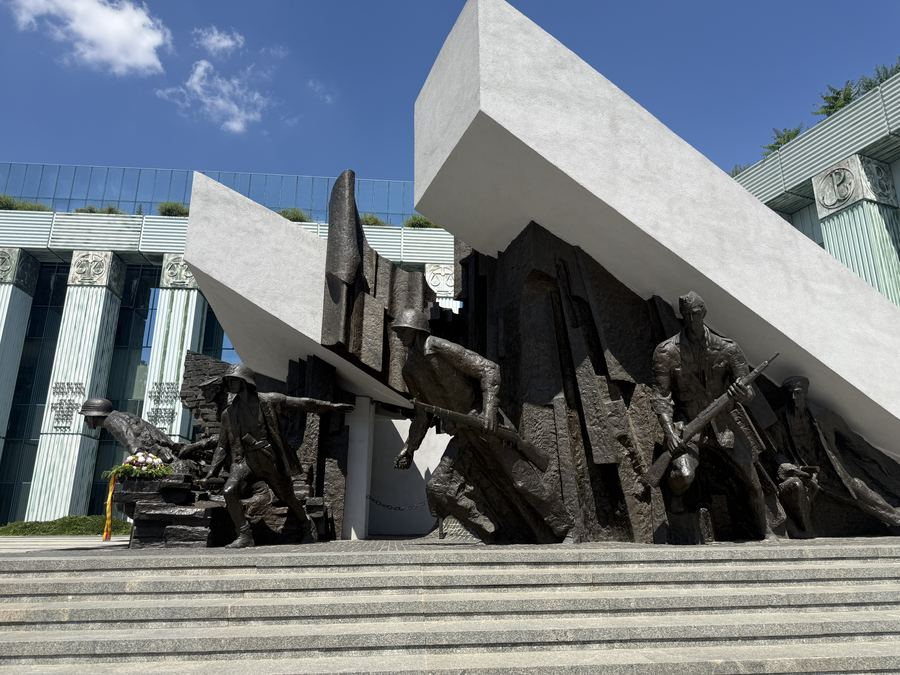

Serbia
BEOGRAD
11 buildings · Socialist Yugoslavia · 1960–1985

Germany
BERLIN
10 locations · DDR & Cold War · 1945–1990

United Kingdom
LONDON
12 buildings · British Brutalism · 1950–1980

Moldova
CHIȘINĂU
19 spots · Soviet Modernism · 1960–1990

Romania
BUCHAREST
12 spots · Communist Romania · 1950–1989
Transnistria
TIRASPOL
15 spots · Soviet Legacy · 1960–1992

Poland
POLAND
9 spots · Warsaw & Wroclaw · 1950–1989